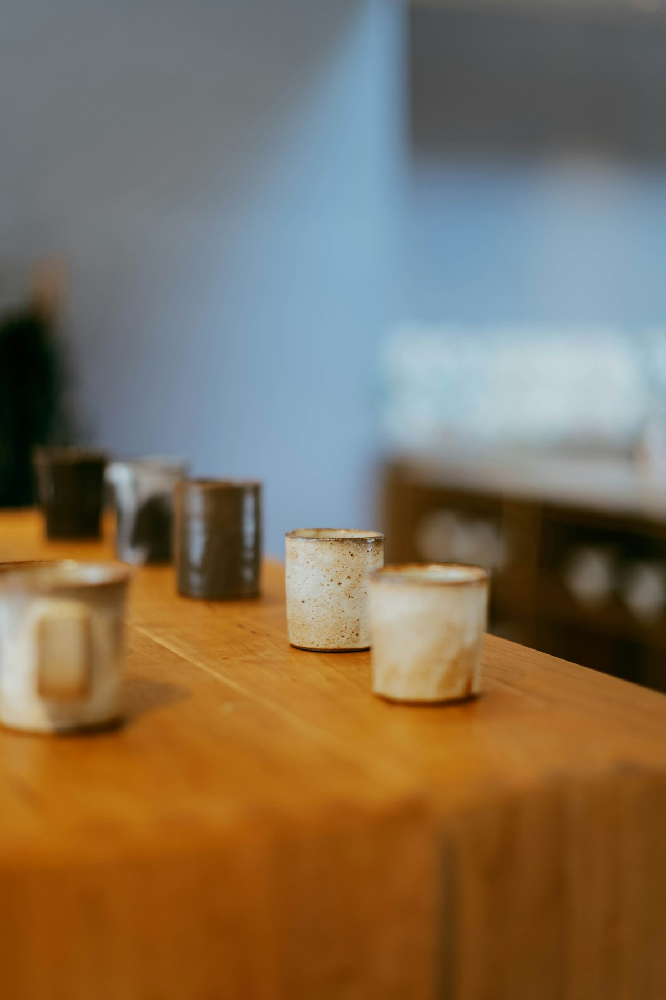

“뭘 사야 좋아할까?”
취향도 예산도 다른 사람들.
누구에게나 같은 선물은 아쉬우니까.
✦ 대상과 상황에 맞는 두 가지 추천
LESS SEARCHING, MORE TRAVELING
누구에게, 무엇을, 어디서 살지.
선물 고민은 Tripick에 맡기고
지금, 눈앞의 여행을 즐기세요.
DISCOVER ✳ PICK ✳ EXPLORE ✳ GIFT
A LITTLE LESS WORRY
검색 창은 닫고, 여행에 조금 더 가까워지세요.
취향도 예산도 다른 사람들.
누구에게나 같은 선물은 아쉬우니까.
검색하고, 지도 켜고, 다시 검색하고.
낯선 거리에서 낭비하는 시간을 줄이세요.
남은 일정은 긴데 짐은 벌써 가득.
마음에 드는 선물을 포기하지 않도록.
01 — YOUR PERFECT PICK
여러 사람에게 가볍게 나눌 선물도,
한 사람을 위해 신중하게 고를 선물도.
지금 필요한 방식으로 시작하세요.
추천 과정을 가볍게 경험해 보세요.
예시 결과로 구성된 서비스 미리보기입니다.
나눠주기 좋은 선물을 빠르게 골라볼까요?
하나씩 나누기 좋은 개별 포장 간식. 동료들의 취향을 모두 몰라도 가볍게 마음을 전할 수 있어요.
상품·가격·매장 정보는 실제 판매 정보와 연결되지 않은 예시입니다.
02 — FROM PICK TO PRESENT
여행 전의 작은 저장이, 여행 중의 좋은 선택으로.
Tripick이 모든 순간을 함께 연결합니다.
현지 상점과 대표 기념품을 둘러보고, 다음 여행에서 만나고 싶은 것들을 모아두세요.
큐레이션 피드 · 관심 목록취향, 예산, 남은 시간을 반영해 후보를 좁히고, 여러 사람의 선물도 한 번에 정리해요.
AI 추천 · 예산 플래너AR로 크기와 포장을 살펴본 뒤, 선택한 상품을 만날 수 있는 매장으로 이동하세요.
AR 미리보기 · 길 안내선물을 고른 마음을 카드에 담고, 지원 매장에서 배송을 연결해 남은 여행을 가볍게.
스토리 카드 · 배송 연결실제 치수를 바탕으로 크기와 포장을 확인하고,
캐리어 옆에 놓아 수납 공간을 가늠해 보세요.

AR 크기 확인기능 소개 이미지남은 시간과 최종 목적지를 고려해
실현 가능한 구매 동선을 우선 제안해요.
천천히 차 마시는 시간을 좋아하는 너에게.
여행에서 만난 이 작은 잔이
너의 하루에도 잠깐의 여행이 되기를.
03 — MORE THAN A SOUVENIR
어디에서 만났는지, 왜 네가 떠올랐는지.
선물에 담긴 이야기가 가장 오래 남으니까.
여행 사진과 메모, 확인된 지역·상품 정보를 바탕으로
AI가 카드의 초안을 만들어요. 당신의 말로 다듬어
세상에 하나뿐인 선물을 완성하세요.
TRAVEL LIGHT. GIVE FULL.
손에는 선물 대신, 다음 여행의 여유를.
지원 매장과 제휴 접수처에서 해외배송을 연결합니다.
상품의 배송 가능 여부, 비용과 예상 도착 기간을 먼저 확인해요.
지원 범위 안에서 받을 곳을 선택하고, 스토리 카드 동봉 여부도 정해요.
해외배송 및 카드 인쇄·동봉은 제휴 매장, 지역, 상품별 배송 조건에 따라 제공되는 확장 기능입니다.
GOOD TO KNOW
여러 사람에게 나눠줄 선물을 빠르게 고르고 싶은 여행자, 특정인의 취향을 생각해 선물하고 싶은 여행자, 구매 후 짐 부담을 줄이고 싶은 여행자에게 맞는 서비스입니다. 여행 전에도 여행지와 기념품을 발견하고 저장할 수 있어요.
빠른 추천은 가까운 판매처, 금액대, 거리, 개별 포장 같은 조건으로 후보를 좁힙니다. 맞춤 추천은 선물할 사람의 취향과 예산을 우선 반영하고, 왜 그 사람에게 어울리는지 설명하는 방식입니다.
기념품의 크기·외형·포장 형태를 실제 공간에 배치해 살펴보고, 캐리어에 필요한 공간을 가늠할 수 있도록 기획된 기능입니다. 주변 매장 탐색과 판매처까지의 AR 길 안내도 연결됩니다. 사용 가능 여부는 지원 상품과 기기에 따라 달라질 수 있어요.
현재 페이지는 Tripick의 서비스 경험을 소개하는 미리보기입니다. 추천 영역에서는 예시 결과를 체험할 수 있으며, 실제 상품 구매·AI 추천·AR 실행·배송 신청은 연결되어 있지 않습니다.